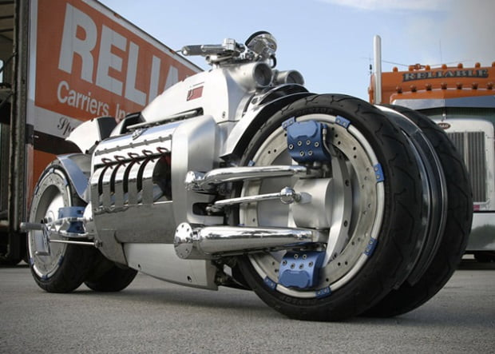

.Antes de conocer su precio, conozcamos su poderoso motor Viper de 8.3 Litros capaz de entregar más de 500 caballos de potencia y llegar a una increíble velocidad de hasta 675 km/h. Además, el modelo Dodge Tomahawk será limitado a 100 ediciones especiales. Este monstruo en el camino tiene un costo de 420 mil euros, ubicándola en la lista de las motos más caras del mundo.
